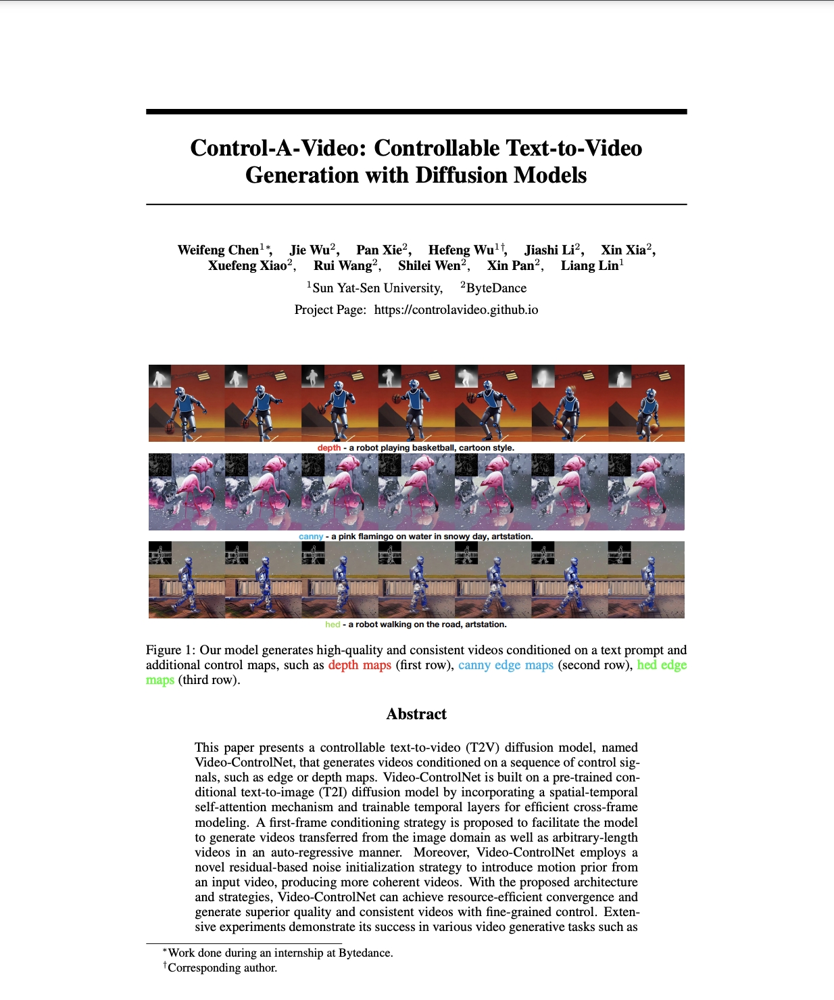

Control-A-Video: Controllable Text-to-Video Generation with Diffusion Models
| | Paper | Code | Online Demo | |
Abstract
This paper presents a controllable text-to-video (T2V) diffusion model, named Video-ControlNet, that generates videos conditioned on a sequence of control signals, such as edge or depth maps. Video-ControlNet is built on a pre-trained conditional text-to-image (T2I) diffusion model by incorporating a spatial-temporal self-attention mechanism and trainable temporal layers for efficient cross-frame modeling. A first-frame conditioning strategy is proposed to facilitate the model to generate videos transferred from the image domain as well as arbitrary-length videos in an auto-regressive manner. Moreover, Video-ControlNet employs a novel residual-based noise initialization strategy to introduce motion prior from an input video, producing more coherent videos. With the proposed architecture and strategies, Video-ControlNet can achieve resource-efficient convergence and generate superior quality and consistent videos with fine-grained control. Extensive experiments demonstrate its success in various video generative tasks such as video editing and video style transfer, outperforming previous methods in terms of consistency and quality.
Paper
|  |
Control-A-Video: Controllable Text-to-Video Generation with Diffusion Models |
Bibtex